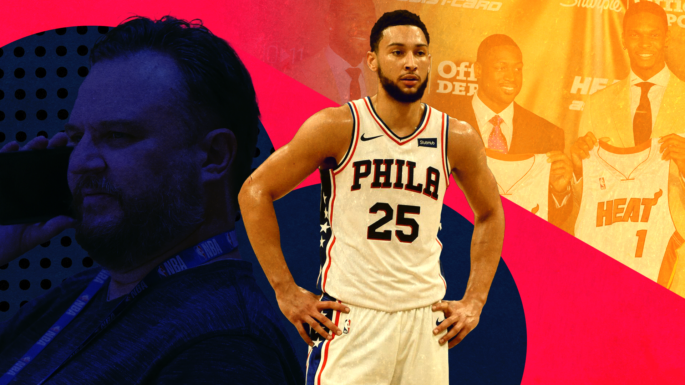

The Ben Simmons saga isn’t about Ben Simmons at all
Ben Simmons is playing the NBA’s biggest game of chicken with the Philadelphia 76ers, who’s going to win and what does it mean for the rest of the league?
Sean Carroll illustration
T he Ben Simmons saga is the NBA’s version of an unstoppable force meeting an immovable object. The 6-foot-11 elephant in the room has been sitting out games since the start of the 2021-22 season, hoping to be traded, but despite numerous reports that a trade is coming, we’re no further than we were three months ago.
Usually, when a star player requests a trade, the front office acts as tough as they possibly can before begrudgingly giving the player what they want. If the player plays their cards right, they can even manipulate the trade so it’s somewhere they want to go.
Kyrie Irving wanted out of Cleveland and threatened to have season-ending knee surgery, per Joe Vardon, Cleveland.com , before being moved to Boston. Jimmy Butler infamously played with the third-stringers while an overwhelmed Tom Thibodeau looked for a trade. Anthony Davis went through his messy divorce with New Orleans before joining LeBron in LA.
The player-empowerment era, a term championed by Bill Simmons, started off with players maximising their flexibility and financial earnings in free agency. But it has grown into players gaining more control over their place of work and colleagues.
When Ben Simmons requested a trade from the Philadelphia 76ers, it looked like it was just another day in the world of the NBA; star asks for trade, chaos ensues.
But Daryl Morey, president of basketball operations for Philly, has been here before. Unlike other decision-makers across the league, Morey has a long list of shrewd moves and enough tricky waives, stretches and sign-and-trades to make a cap nerd wet in the trousers.
Morey wasn’t going to bend over and take 80 cents on the dollar in a Simmons trade. Not only that, but Daryl would want to find a trade partner willing to give him more than what Simmons is worth.
At the moment, nobody is willing to trade a star for the Australian and if Morey thinks such a trade exists, it might just be a waiting game to see when that deal materialises.
Simmons’ agent is Rich Paul of Klutch Sports, another key figure in the league who has a long history of playing hardball and getting his players exactly what they want. As LeBron James’ agent, Paul helped him change teams three times, he brought AD to LA, he held out on a Tristan Thompson extension until he got his client overpaid, and the list goes on. Paul isn’t afraid to make things dirty if it leads to a better result for his client.
Both Paul and Morey know exactly what’s going on. The entire league knows what’s happening and it doesn’t look like anybody’s going to back down.
Ben Simmons has four years remaining on his contract and unless he retires or leaves money on the table, there’s nothing he can do about that. Rich Paul knows this and is trying to make the situation ugly, changing the public perception and attempting to force Morey’s hand.
So far, it hasn’t worked, and in for a penny, in for a pound, if Morey traded Simmons for 80 cents on the dollar today, he would have lost the trade plus pissed off fans and colleagues along the way.
The most recent report, coming from Shams Charania, The Athletic, says that the Knicks, Lakers, Wolves (my preseason Simmons destination prediction) , Blazers, Kings, Pacers and Cavs are the teams interested in Simmons, but don’t jot those names down in your notes app, it’ll probably change in a few days.
Whenever Rich Paul thinks he’s gaining traction with a report like welcoming a Spurs trade or a C.J. McCollum swap, the 76ers hold true to their initial goal and wait for something better to come along.
Morey isn’t giving in to public pressure and, to be honest, nor should he. Superstar trades in the past have come when a player has one or two years remaining on their deal, meaning if there isn’t a trade, he can just leave in free agency for nothing, the worst possible scenario for the team.
So here we are, stuck at a stalemate. Simmons and Klutch are waiting for a trade, feeding reporters enough rumours to keep his name trending in the eyes of the fans while the 76ers front office keep as quiet as possible.
There doesn’t seem to be a variable in Philadelphia for Morey anymore. He’s simply waiting for one of the other 29 teams to get desperate enough and part with a player he wants.
As the Portland Trail Blazers situation deteriorates, Morey gets closer to one of his "30 players" he’d trade Ben for becoming available. If Sacramento starts getting desperate, Morey gets closer to winning and so on for any other team out there.
It doesn’t look great for Klutch. But they still have one silver bullet: Joel Embiid.
Embiid is a perennial MVP candidate and has been playing some of the best basketball in the entire league for the past few seasons. The fit between he and Simmons was questionable at the worst of times and passable at the best of times (all the more reason for a trade), but for every game the Sixers play without their second-best player, it’s a missed opportunity to maximise the roster.
If this standoff lasts until the upcoming offseason, as Kyle Neubeck, Philly Voice reported Morey is willing to do, that’s an entire season and playoff run wasted without maximising a season of Embiid’s prime. At some point, would the 76ers ask if it’s worth trading Simmons for a lesser player just to get more talent around Joel?
At the start of the season, when the Sixers were 8-2 and looking more than capable without their second star, this wasn’t a question at all. Today, Philly is 16-15 and currently ninth place in a surprisingly adept Eastern Conference.
That’s a lot of pressure to put on the players and coaches on the court. If it hasn’t happened already, would Doc Rivers or some of the players think, “can’t we just make a move to bring in something, not necessarily the best thing, and get on with the season?”
It’s automatically putting the team in a precarious situation, essentially fighting Morey’s battle to stay relevant without Simmons. If you’re a player on that team, maybe you want to request a trade with multiple years left on your deal one day, wouldn’t you rather muddy this situation up so Simmons can get traded and set a precedent?
The winner of this standoff will have huge implications across the league.
Player empowerment has led to a correction in the NBA business, handing more power over to the players, the guys who actually play the games and create the ‘product’.
The Ben Simmons saga is pushing the limits of that empowerment. If Simmons had reported to training camp and played as if nothing were wrong then requested a trade three seasons from now, would it be done in a week?
If Rich Paul wins this, other players and other agents can use Simmons as a case scenario to say that a four-year deal isn’t as secure as it once was.
Is that a good thing for the league?
On the other side of the coin, player empowerment is more about giving workers the choice about where they want to play. The NBA has a draft system that will lead to unhappy players for the rest of eternity but the alternative is a collection of big market teams controlling the best players like in other leagues (see Game, the World).
At face value, the Ben Simmons saga is an annoyance. A standoff between two parties that might impact the Larry O’Brien trophy.
In reality, it’s much deeper and it’s another turning point in NBA players’ history. It’s much more likely to end with interference from the commissioner than we’re giving it credit for.
But hey, #NBA75.